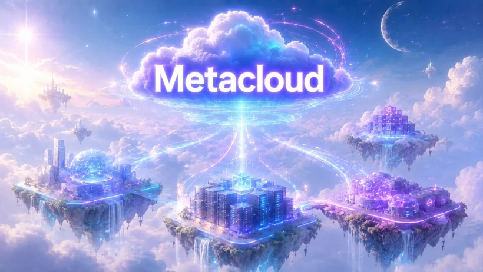

What Is a Metacloud — And How to Start Running One This Summer
A metacloud is the control plane that governs any cloud, hypervisor and provider without replacing them. Learn what it is, why it beats multi-cloud, and how to start free this summer with Electros.

Most enterprises don’t have a cloud problem. They have a dependency problem.
You already run workloads across public clouds, private data centers, hypervisors, edge nodes and — increasingly — sovereign environments. What you don’t have is a single way to govern all of it. Every provider brings its own console, its own API surface, its own operating model and its own lock-in mechanics. The result is familiar: fragmented operations, ballooning management overhead, and the uncomfortable realization that you own your workloads but not the freedom to move them.
A metacloud fixes that — and this summer you can try it for free. Below we’ll cover what a metacloud actually is, why it beats a traditional multi-cloud setup, and exactly how to spin one up with Electros, the Elemento Cloud control plane, now available in a new version that’s free for the entire summer of 2026.
Metacloud, defined (without the buzzwords)
Every era of infrastructure has been defined by one abstraction that turned the layer beneath it into a commodity. Virtual machines abstracted physical servers. Kubernetes abstracted containers. The metacloud abstracts infrastructure providers themselves.
Concretely, a metacloud is a control plane that sits above your clouds, hypervisors and Kubernetes environments and unifies them into a single operational, governance and procurement layer — while preserving each provider’s independence and your workloads’ portability. It does not replace your infrastructure. It federates what you already have.
That last point is the whole game. Traditional cloud management handles one provider at a time, with provider-specific tooling and governance welded to the infrastructure itself. A metacloud handles many providers simultaneously, through one common operating model, with governance cleanly separated from ownership. You stop migrating and start federating.
The core principle: infrastructure should stay where it is. Workloads should run where they make the most sense.
Why not just 'do multi-cloud'?
Because multi-cloud, in practice, too often becomes multi-silo. You end up with several providers that don’t interoperate natively, stitched together with brittle custom integrations that are expensive to maintain. You get more options on paper and less control in reality.
The data backs this up. Gartner forecasts that more than 50% of organizations won’t achieve the results they expect from multi-cloud by 2029 — largely because of interoperability problems. Meanwhile, worldwide sovereign cloud IaaS spending is projected to hit $80 billion in 2026, with European spend growing roughly 83% year over year. And despite the public-cloud hype, IDC and Gartner estimate that around 80% of enterprise workloads still run on-premises or in private cloud.
Put together, these numbers describe a very specific opportunity: most enterprise infrastructure is already hybrid and heterogeneous — it just lacks a layer that governs it as one coherent system. That layer is the metacloud, and getting interoperability right is exactly what separates a real metacloud from a pretty dashboard bolted on top of chaos.
The Elemento metacloud stack
Elemento Cloud is a metacloud platform. Instead of replacing your infrastructure, it adds a control and federation layer above private clouds, public clouds, sovereign clouds, hypervisors and Kubernetes. Three products make it work.
Electros™ — the control plane. Electros is the operational core: a hyper-orchestrator that gives you one interface to discover, govern, broker and orchestrate resources across every connected environment. One dashboard for health, capacity and cost. Cross-provider orchestration to deploy, migrate and scale without platform-specific tooling. Consistent governance, tagging and cost-attribution policies everywhere. Unified VNC (and soon RDP and SSH) access, no separate bastion required. Automation through REST APIs that drop straight into your CI/CD and infrastructure-as-code pipelines. This is free all summer — more on that below.
Atomosphere™ — the universal provider fabric. Atomosphere is the distributed connectivity layer: provider-side API proxies and federation endpoints that expose infrastructure and services to the metacloud through a common interoperability model. Rather than centralizing your infrastructure, it lets heterogeneous providers join a common federation while keeping their operational independence. It’s how Electros can speak to everything without forcing anything to standardize.
AtomOS® — the open hypervisor. For teams looking beyond VMware, AtomOS is a next-generation virtualization platform built on Linux KVM and QEMU, running on a RHEL-compatible foundation. GPU passthrough for AI workloads, live migration, autonomous clustering, broad storage compatibility — no proprietary hypervisor engine, no storage vendor lock-in. It turns commodity hardware into a cloud-ready, sovereign-ready environment.
Together they deliver the metacloud promise: one control plane, every provider, zero forced lock-in.
How to start your metacloud in four steps
You don’t rearchitect everything. You start small and expand as the value proves out.
1. Map your workloads and dependencies. Identify what’s critical, which data needs strict jurisdictional control, which services are genuinely portable versus locked to a single provider, and what it would actually cost to exit each vendor. This surfaces your hidden lock-in and sets priorities.
2. Connect Electros to a narrow perimeter. Don’t boil the ocean. Pick one bounded use case — a dev/test estate, a cross-provider disaster-recovery setup, or rebalancing a few workloads between on-prem and public cloud — connect it to Electros, and start operating it through one model. Measure the benefits before you widen the scope.
3. Federate your providers with Atomosphere. Bring your clouds and hypervisors into a common federation without standardizing them. Each environment keeps its independence; Electros governs them all through one operational surface.
4. Automate and govern via API. Wire resource discovery, workload placement, provisioning, policy enforcement and cost visibility into your existing CLI, API and IaC toolchains. This is where governance stops being a bottleneck and becomes an enabler.
Try the metacloud free this summer
Here’s the part worth acting on today. The new version of Electros is free for the entire summer of 2026 — a no-commitment way to connect your existing environments, see your whole estate through a single pane, and feel what provider-neutral operations actually do to your day-to-day.
There’s no infrastructure to rip out and nothing to migrate. You point Electros at what you already run and start governing it as one system.
👉 Download Electros free — summer 2026
Want to see how a metacloud maps to your specific estate — your VMware exposure, your sovereignty requirements, your AI/GPU roadmap? Talk to the people who build it.
📅 Book a call with the Elemento team
Key takeaways
A metacloud is the control plane above your infrastructure providers — it unifies, governs and makes interoperable any cloud, hypervisor or environment, without replacing anything or creating new lock-in. It beats multi-cloud because it solves interoperability instead of multiplying silos. With Elemento, Electros gives you the control plane, Atomosphere federates your providers, and AtomOS offers an open path off VMware. And right now, Electros is free for the whole summer — the easiest possible way to run your first metacloud.
Infrastructure should stay where it is. Your workloads — and your freedom to move them — belong to you.